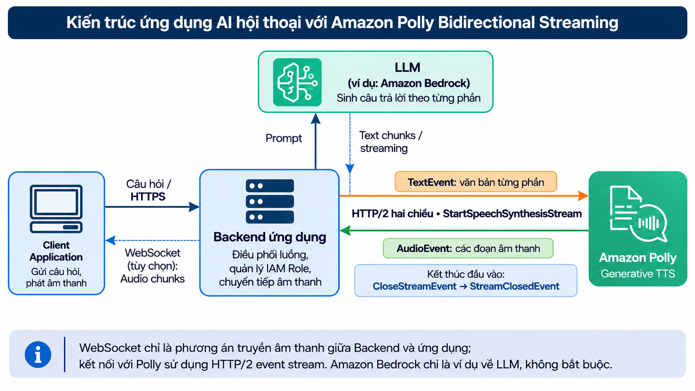

In conversational AI applications, users often want to hear an answer as soon as the system starts generating it, rather than waiting for the entire response to be completed. For example, a customer service chatbot may use a large language model (LLM) to generate an answer and then convert the content into speech for the user.
LLMs typically generate text incrementally during processing. However, with traditional Text-to-Speech (TTS) integration, an application generally has to provide the entire text in a single synthesis request. This means the system may need to wait until enough content is available before starting the TTS request. To reduce this delay, developers may have to split the text into multiple segments, send several synthesis requests, and handle the reassembly of the resulting audio segments.
Amazon Polly can already return audio as a stream in the response to the SynthesizeSpeech API. The limitation in this scenario is on the input side: this API requires the text to be provided in a complete request. Amazon Polly Bidirectional Streaming addresses this limitation by allowing an application to send text incrementally while receiving synthesized audio at the same time within a single connection session.
Amazon Polly is an AWS-managed Text-to-Speech service that converts text into synthesized speech. It provides different voices and engines to support various text-to-audio conversion needs.
The Bidirectional Streaming feature uses the StartSpeechSynthesisStream API. This API establishes a bidirectional HTTP/2 connection between the application and Amazon Polly. Instead of waiting for the complete text, the application can send content in segments as it becomes available. At the same time, Polly synthesizes the text it has received and sends audio segments back to the application.
This mechanism has three key aspects:
TextEvent event. The text segments do not necessarily have to align with sentence or paragraph boundaries.AudioEvent event as audio segments are generated. Audio events can be received while the application is still sending additional text.CloseStreamEvent. Polly processes any remaining buffered text, sends the final audio segments, and signals completion through StreamClosedEvent.The key innovation is not that Polly supports audio streaming for the first time. Rather, it is the ability to stream both the input text and the output audio concurrently over the same HTTP/2 connection. This approach is particularly suitable for content that is generated continuously by an LLM.

Figure 1. An illustrative architecture of a conversational AI application using Amazon Polly Bidirectional Streaming.
The illustrated architecture consists of four main components:
| Component | Role |
|---|---|
| Web/Mobile Application | Receives questions from users and plays the audio segments forwarded by the backend. |
| Application Backend | Receives requests, calls the LLM, opens a streaming session with Polly, sends text, and receives audio segments. |
| Large Language Model (LLM) | Analyzes questions and generates responses incrementally. Amazon Bedrock or another platform that supports streaming generation can be used. |
| Amazon Polly | Receives text through TextEvent, synthesizes speech using the Generative engine, and returns audio through AudioEvent. |
The backend coordinates communication between the LLM, Amazon Polly, and the user application. The method used to deliver audio data from the backend to a browser or mobile device is a design choice made by the developer. For example, the backend may use WebSocket or another suitable streaming mechanism. This is an application-level connection, not a requirement imposed by the HTTP/2 connection between the backend and Amazon Polly.
A Bidirectional Streaming session can follow this sequence:
StartSpeechSynthesisStream through a compatible AWS SDK and configures synthesis parameters such as Engine, VoiceId, OutputFormat, and SampleRate.TextEvent.AudioEvent. The backend receives these segments and forwards them to the application.CloseStreamEvent. Polly processes the remaining data and sends a StreamClosedEvent to indicate that the synthesis session has completed.This process allows two operations to take place in parallel: the LLM continues generating text while Polly synthesizes the text it has already received. The application does not need to wait for the LLM to finish the entire response before starting speech synthesis.
To understand the value of the new feature, it is important to distinguish Bidirectional Streaming from Amazon Polly’s existing SynthesizeSpeech API.
SynthesizeSpeech follows a request–response model: the application submits the entire text in one request and then receives an audio response. The audio in that response can still be delivered progressively as it becomes available. Therefore, the main difference is not whether the older API supports audio streaming, but how the input text is provided.
By contrast, StartSpeechSynthesisStream allows the application to send text incrementally through TextEvent and receive audio through AudioEvent within the same bidirectional HTTP/2 session.
| Criterion | SynthesizeSpeech |
StartSpeechSynthesisStream |
|---|---|---|
| How text is submitted | Sends the complete text in one request | Sends text incrementally through TextEvent |
| How audio is received | Receives an audio stream in the HTTP response | Receives audio segments through AudioEvent |
| Communication model | Request–response | Bidirectional streaming over HTTP/2 |
| Supported engines | Standard, Neural, Long-form, and Generative | Generative only |
| Speech Marks | Supported | Not supported |
| Suitable use case | The text is available before synthesis begins | The text is generated incrementally and synthesis should begin before the LLM finishes |
Therefore, SynthesizeSpeech remains suitable when the application already has the complete content and needs a straightforward integration. StartSpeechSynthesisStream is more suitable when text is generated continuously, such as chatbot responses or translated content delivered in segments.
In its technical announcement, AWS conducted a benchmark using the same content of 7,045 characters, or approximately 970 words. The test used the Matthew voice with the Generative engine, MP3 output at a 24 kHz sample rate, and the US West (Oregon) Region. AWS simulated the LLM generating content at a rate of approximately 30 milliseconds per word.
| Metric | Sequential integration with SynthesizeSpeech |
Bidirectional Streaming |
|---|---|---|
| Total processing time | 115,226 ms (approximately 115 seconds) | 70,071 ms (approximately 70 seconds) |
| Number of API calls | 27 | 1 streaming session |
| Content submission method | Sends each complete sentence sequentially | Sends text incrementally as it is generated |
In this scenario, AWS reported an approximately 39% reduction in processing time and a decrease in API calls from 27 to 1. These results come from a specific test configuration and integration approach; they are not a guaranteed improvement for every application. Actual performance also depends on the LLM’s generation speed, network latency, voice, data segmentation, and the application’s audio playback mechanism.
Reduced perceived waiting time: Users can start listening to a response while the LLM is still generating the next portions of content. This can make voice-based conversations feel more responsive and natural.
Simplified application integration: With a traditional implementation, developers may need to split content manually, send multiple TTS requests, track the order of responses, and reassemble audio segments. Bidirectional Streaming provides a single bidirectional session, reducing some of the orchestration logic and the number of separate synthesis requests.
Support for applications that require continuous responses: The feature can be used in customer service chatbots, virtual assistants, Interactive Voice Response (IVR) systems, conversational translation applications, and accessibility tools that provide spoken content.
However, Bidirectional Streaming does not automatically eliminate all application latency. Response time is still affected by LLM processing time, network conditions, speech synthesis, and how the application delivers audio to users.
StartSpeechSynthesisStream currently requires the Generative engine. If an application needs the Standard, Neural, or Long-form engine, it must choose another suitable API, such as SynthesizeSpeech.In addition, AWS credentials should be managed in the backend using an IAM Role or another appropriate access mechanism. Long-term Access Keys and Secret Access Keys should not be embedded directly in JavaScript code running in a browser or mobile application.
Amazon Polly Bidirectional Streaming extends speech synthesis by allowing an application to stream input text and receive output audio concurrently over an HTTP/2 connection. This is an important improvement for conversational AI applications, where content is often generated incrementally by an LLM.
The feature can reduce users’ perceived waiting time and simplify part of the TTS integration process. However, API selection should still depend on the application’s requirements: StartSpeechSynthesisStream is suitable for continuously generated text, while SynthesizeSpeech remains a reasonable choice when the complete text is already available or when the application requires engines and features that the streaming API does not support.